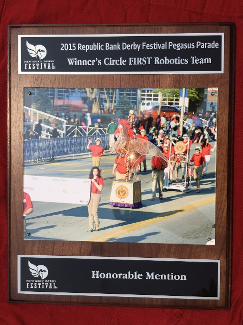
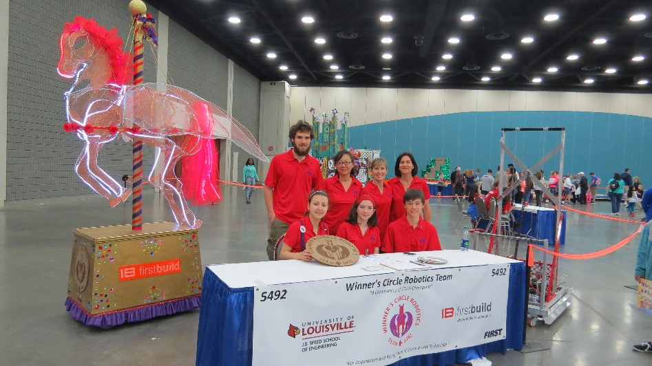
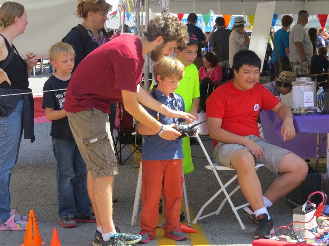
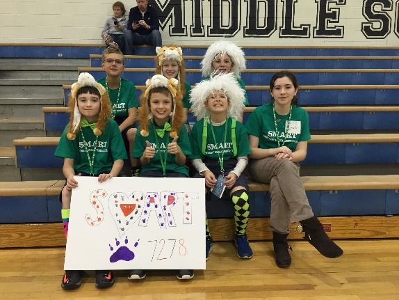

University of Louisville
Winner’s Circle Robo Jockeys provide volunteer support for University of Louisville Speed School outreach activities including its eight summer camps, its Engineering Expo, and robotics outreach at local elementary and middle schools.
- Summer camp
- Engineering expo
Pegasus Parade
WCRJ participated in the Kentucky Derby 60th Annual Pegasus Parade in 2015 and won an honorable mention for its remote-controlled Pegasus Float.
 Maker Fair
The Louisville Mini-Maker Faire has played a key-role in the startup and success of this FRC team. In 2013, founding members participating on an FLL team attending the inaugural Louisville Maker Faire to gauge whether the Louisville community could support a new FRC team. Thanks to promises of support from local companies and university faculty, the students decided to start the team at DuPont Manual High School. The team returned to the faire the following year, with two robots for attendees of the faire to test drive. The following year, in 2015, the team provided an competition field for the maker faire in order to host an actual FRC scrimmage for the faire’s attendees. This was a huge success and provided inspiration to many youth to pursue participation on FIRST FLL and FRC teams. In 2016 the team had its own booth.
Local Efforts
Student members have helped start several FIRST Lego League teams, including at Saint Mary Academy, Noe Middle School, and a home schooled team. Members also provide mentorship support to current teams at Meyzeek Middle School and those participating in the UofL Speed School Outreach Program.
In 2016, Girls' Engineering Time built their own solar plane.